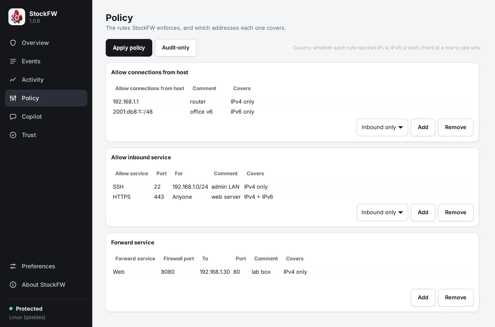

Policy
Your rules, grouped by kind, each one a row you can read. Saving a rule changes a file in your profile; pressing Apply changes the firewall, after showing you what will change.

How to think about it#
The engine’s defaults do most of the work: new inbound connections are denied unless a rule allows them, new outbound connections are allowed unless a rule denies them, and replies to connections that are already open always pass. StockFW rules are exceptions to those defaults, which is why the kinds are named the way they are: allow inbound, deny outbound. There is no inbound-deny kind because inbound is already denied; to stop trusting a host you remove its allow.
The rule kinds#
| On the page | Command-line name | Fields | Meaning |
|---|---|---|---|
| Allow connections from host | inbound-allow-from | host | Everything from this address, network or host name may come in. |
| Allow inbound service | inbound-allow-service | service, port, for | This port may be reached from for: a host, a network such as 192.168.1.0/24, or Anyone. |
| Forward service | inbound-forward | service, firewall port, to, port | Traffic arriving on the firewall port is sent to another host and port. Router mode only; needs an external interface in Preferences, and the destination must be an address. |
| Allow connections to host | outbound-allow-to | host | Everything to this host may go out, even in restrictive outbound mode. |
| Allow outbound service | outbound-allow-service | service, port, for | This port may be reached outbound, for the given host or anyone. |
| Deny connections to host | outbound-deny-to | host | Nothing may go out to this host. |
| Deny outbound service | outbound-deny-service | service, port, for | This port may not be reached outbound, for the given host or anyone. |
| Allow / deny connections from (router mode) | outbound-allow-from, outbound-deny-from | host | For a LAN host behind this machine: what it may or may not send out through it. |
Every rule can carry a comment, which is kept in the file and shown in its own column. The “service” field is a name for your benefit; the port is what the engine sees. Common names (SSH, HTTP, HTTPS, DNS, RDP and so on) are known, so the simulator and the Events page can use them.
Covers#
A rule reaches the address families its target can reach, and the Covers column says which, with the reason as a tooltip.
| Target | Covers |
|---|---|
| An IPv4 address or network | IPv4 only |
| An IPv6 address or network | IPv6 only |
Anyone, or an empty field | IPv4 + IPv6 |
| A host name | IPv4 + IPv6 on Linux, where the name is looked up once at apply and written as each family’s addresses. Nothing on Windows, whose firewall takes addresses only. |
| A forward | Its destination’s family. Nothing when the destination is a name or a range, which the generator leaves out. |
The same answer appears as [IPv4 only] in stockfw policy list and as covers and covers_why in its JSON, and a test checks that, for each kind of target, “Covers” names a family exactly when that family’s generated rules contain the rule. Verified test-core.sh
One direction or both#
Inbound and outbound are separate rule spaces, so allowing a peer both ways would normally take two rules. On the groups where a rule has an opposite-direction twin, the Add row carries a Direction control: Inbound only (or Outbound only) by default, or Bi-directional, which stages the twin as part of the same change. The pairs are exact: allow-from pairs with allow-to, and inbound allow-service pairs with outbound allow-service. Deny kinds and forwards have no twin, so the control is absent there rather than disabled. The pair is saved as one change: if the write fails, both rules come back out. Verified test_direction_pairing
This is about new connections in the other direction. Replies to an open connection never need a rule; the engine is stateful.
Apply, step by step#
- Save first. Adding, editing or removing a rule writes the policy file immediately, and if the write fails the change is taken back out of memory, so what you see is always what is on disk.
- Measure. Pressing Apply policy compares the saved policy with the journal of what the engine last accepted (
applied.csv) and shows the counts: “+1 added (1 allow, 0 block), −0 removed, =8 unchanged”. Nothing has happened yet; you can say No. - Push. On Linux the whole policy is rendered into an
iptables-restorepayload and anip6tables-restorepayload and loaded with--noflush, so only StockFW’s own chains are replaced, each family in one atomic step; if the IPv6 load is refused, the IPv4 load is undone. On Windows each rule is onenetsh advfirewallcommand, and only the rules that changed are touched. Preferences that compile to rules (ICMP, broadcasts, reserved sources) are pushed in the same step. - Record. On success the journal is updated to what is now live, so the next Apply measures against reality.
- Report. The dialog says what the engine said. On Linux a successful apply can carry notes (“ip6tables is not installed”, “the forward to 192.168.1.30 was left out: no external interface is set”); on Windows a rule the engine refused makes the apply partial, and the gate restores the last good policy and reports whether the restore worked.
- Audit. One line in
audit.log: the source (Policy page, Events page, Copilot, Sentinel orcli), the mode, the counts, and any notes. Verified test_apply_gate
Apply policy changes immediately, on the Interface › Policy preference page, skips the button: each edit is pushed as soon as it is saved, through the same gate and with the same audit line.
Audit-only and Lock#
Audit-only on this page and Lock policy on the Overview both hold the firewall still. While either is on, Apply measures and records the change, writes an audit line reading “policy held, firewall untouched”, and leaves the engine alone. Turn it off and press Apply when you are ready. Rehearsing a policy this way is the intended use. Verified test_apply_gate
What is checked before anything is saved#
- Ports are digits only (so
80abcand0x50are refused), 0 to 65535, and a range’s first port is not above its last. - Hosts are an IPv4 or IPv6 address, a network in CIDR form (
192.168.1.0/24,2001:db8::/32), or a host name; a host name may not start with a hyphen. - A comma or line break inside a field is refused, because the files are plain comma-separated text and it would become a second field. Verified test_policy_load_validation_f1
When a policy file is loaded and a row does not parse, that row is skipped and counted (“2 malformed policy rules were skipped”), never guessed at or rewritten, and saving does not silently drop or change it. Verified test-core.sh
In the engine#
On Windows every rule StockFW creates is named StockFW-…, with the same canonical name used to add and to delete it, so a change never leaves a stale copy behind; a verified clear re-enumerates and retries until none remain. On Linux the rules live in chains StockFW owns (INBOUND, OUTBOUND, STOCKFW-DNAT, STOCKFW-SNAT) and nothing else in the tables is touched. In both cases wf.msc or nft list ruleset can confirm what StockFW says. The files behind the page are described in Files and formats.